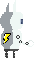
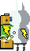
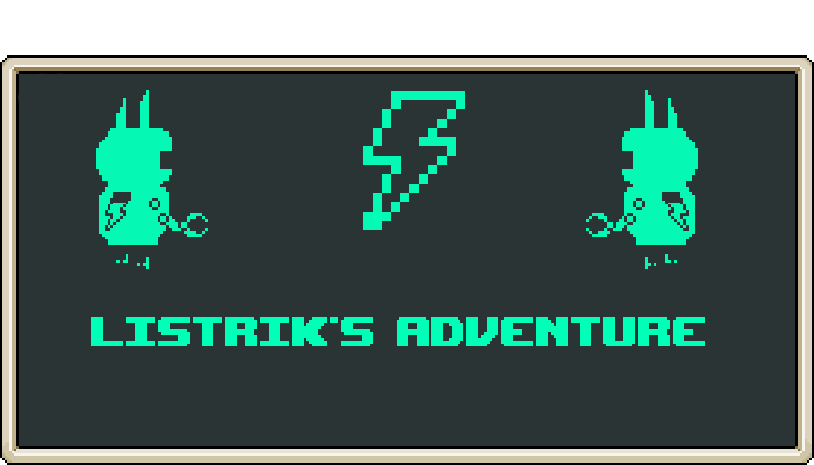

First game & Web game

Move with Q/A and D
Z/W for jump
E for interact
Listrik is my very first video game project, which I developed entirely on my own.
It gave me the opportunity to explore and experiment with all the stages of video game production, from start to finish.
This is a single-player puzzle-platformer where the goal is to solve levels designed around a battery mechanic carried by a small robot named Listrik.
The game was designed to run as a web page using JavaScript and the Phaser 3 framework.
